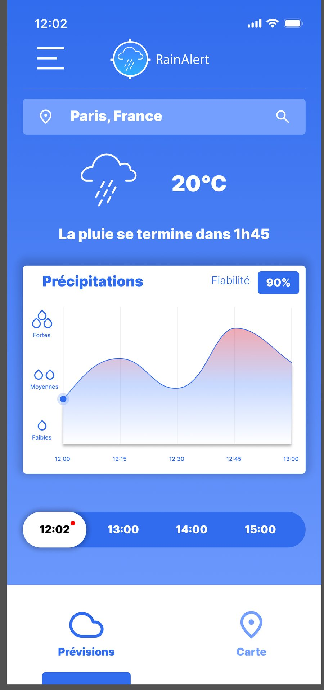
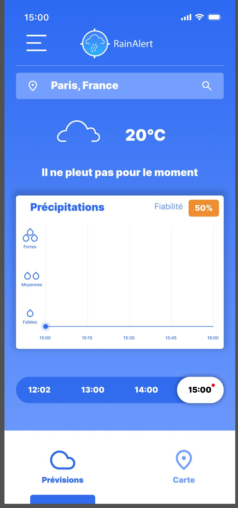
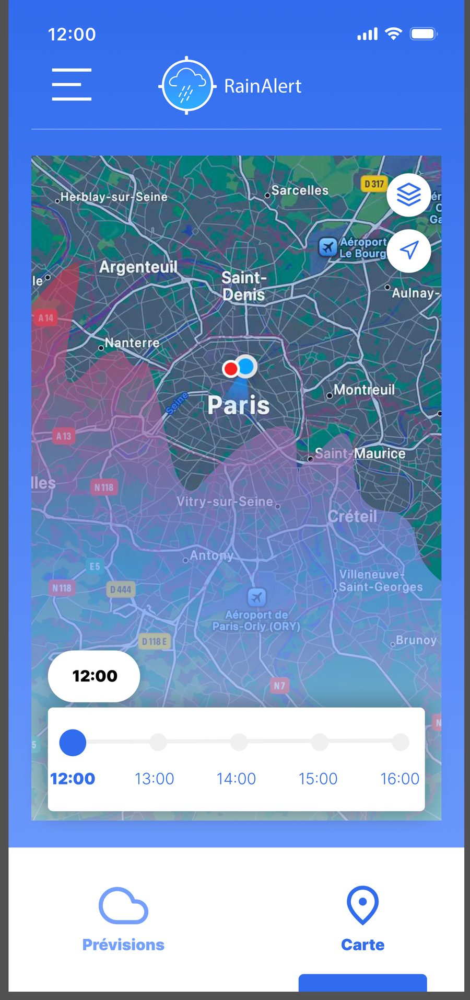
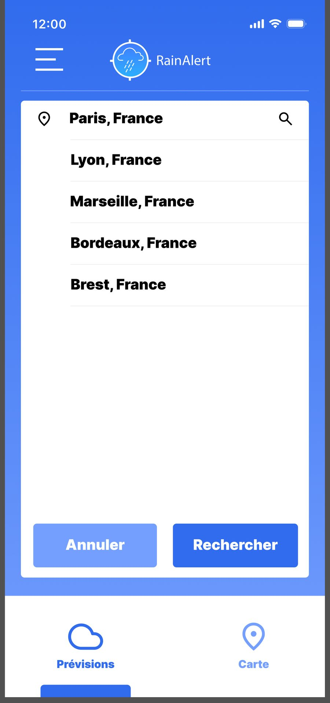
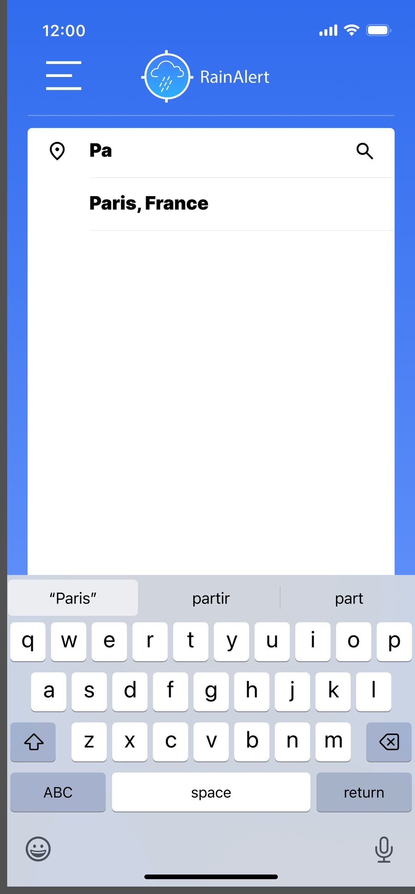

RainAlert : traduire un cahier des charges en interface
Exercice de formation. L'énoncé définissait le produit, ses fonctionnalités et son périmètre ; mon travail a consisté à en faire une interface mobile lisible et utilisable. Six écrans maquetés sur Figma.
- Cadre
- Projet de formation, Studi
- Rôle
- Design d'interface et maquettes
- Outil
- Figma
- Écrans
- Six, dont deux états d'un même écran
L'énoncé
Studi fournissait un cahier des charges précis : une application centrée sur le moment où la pluie s'arrête, un indicateur de fiabilité de la prévision, une carte des précipitations, une recherche de ville, et une navigation limitée à deux onglets.
Le produit et ses fonctions étaient donc posés. La question qui me revenait était celle de la forme : comment rendre tout cela lisible sur un écran de téléphone, consulté debout et d'une seule main ?
Le prototype


Le travail d'interface
Une hiérarchie à trois niveaux
La réponse arrive en une phrase, en gras et au centre. Le détail chiffré vient ensuite, dans une carte blanche détachée du fond. La navigation temporelle ferme l'écran, en bas, à portée du pouce. On peut s'arrêter au premier niveau sans rien manquer d'essentiel.
Un graphique lisible sans légende
L'axe des précipitations est gradué par des gouttes plutôt que par des millimètres : une, deux, trois. L'intensité se lit d'un coup d'œil, sans unité à interpréter, et le dégradé vers le rouge signale les pics.
Deux états, une seule structure
Il pleut, il ne pleut pas. Les deux versions partagent la même mise en page : seuls le message, l'icône et la courbe changent. L'utilisateur retrouve ses repères quel que soit le temps qu'il fait.



Ce que je ferais autrement
- Faire tester le prototype. L'exercice s'arrêtait aux maquettes ; je n'ai aucune donnée sur la façon dont les écrans sont réellement compris.
- Interroger l'énoncé. Aujourd'hui je demanderais pourquoi la navigation se limite à deux onglets et à qui s'adresse l'application — un cahier des charges se discute avant d'être exécuté.
- Vérifier les contrastes. Le texte blanc sur bleu moyen des zones secondaires mérite d'être mesuré au regard des critères d'accessibilité.
- Traiter les cas dégradés : pas de réseau, localisation refusée, ville introuvable. Un prototype ne montre que les chemins qui fonctionnent.